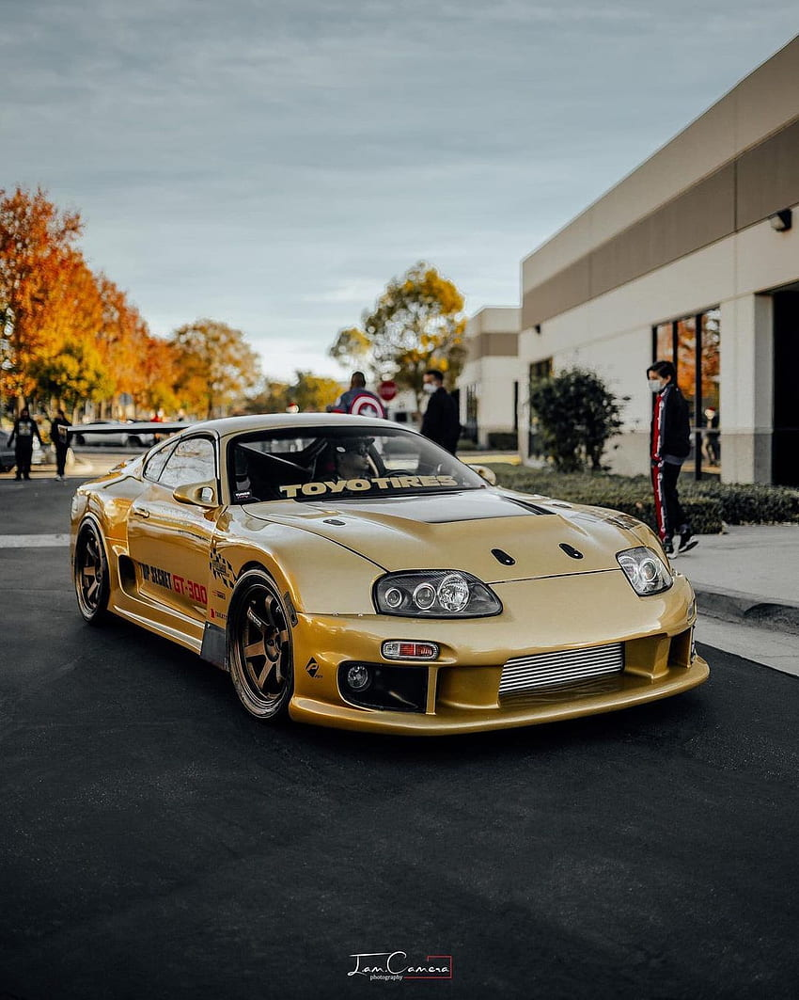

Supra, a traditional Georgian feast
Supra is a melting pot of flavors, aromas, and warm hospitality. As the table fills
with an abundance of dishes, the heart of the feast, the "taeta," takes center stage.
Taeta, meaning "toast," is a cherished moment when the host offers a heartfelt speech
and raises a glass to celebrate friendship, family, and shared joy.
The taeta is a beautiful tradition that encapsulates the essence of the supra. It is a
time when laughter fills the air, and stories unfold like petals of a blooming flower.
As the toastmaster's words dance with passion, they weave together tales of triumph,
love, and the enduring spirit of the Georgian people.
With each heartfelt toast, glasses clink and vibrant flavors intermingle. The table
becomes a tapestry of culinary delights, featuring an array of savory meats, fragrant
herbs, and freshly baked bread. From the earthy flavors of khinkali, the savory
dumplings, to the tender juiciness of satsivi, the rich chicken in walnut sauce,
every bite is an adventure for the senses.
But it is not just the food that nourishes the soul at a supra. It is the shared
experience, the sense of unity and belonging that makes it truly special. Around the
table, friends become family, and strangers become friends. As the night unfolds, the
bond between guests grows stronger, fueled by laughter, music, and the warmth of
heartfelt conversations.
At the heart of every taeta lies the spirit of togetherness, reminding us of the
importance of cherishing our loved ones and embracing the simple joys of life. It is a
celebration of tradition, culture, and the power of human connection, leaving a
lasting imprint on all who partake in this joyous feast.
In the world of supras, the taeta is the crown jewel, a moment when time stands still,
and the world becomes a tapestry of love and camaraderie. So let us raise our glasses
high, in a toast to the magic of the taeta and the unforgettable memories it creates.